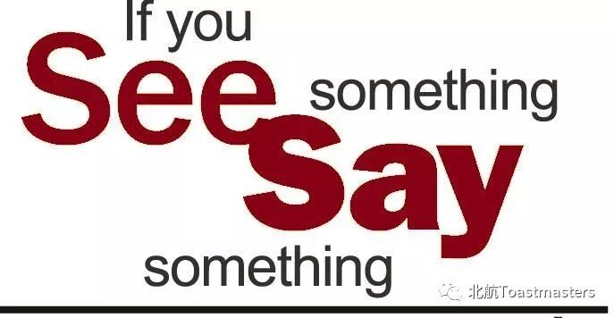
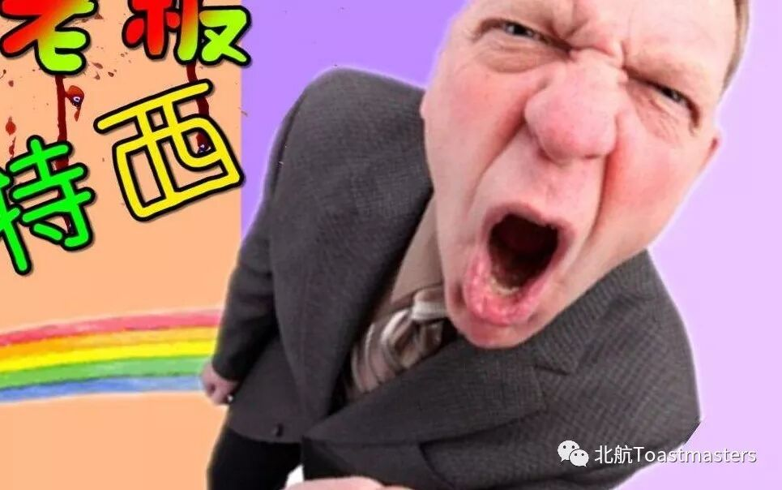
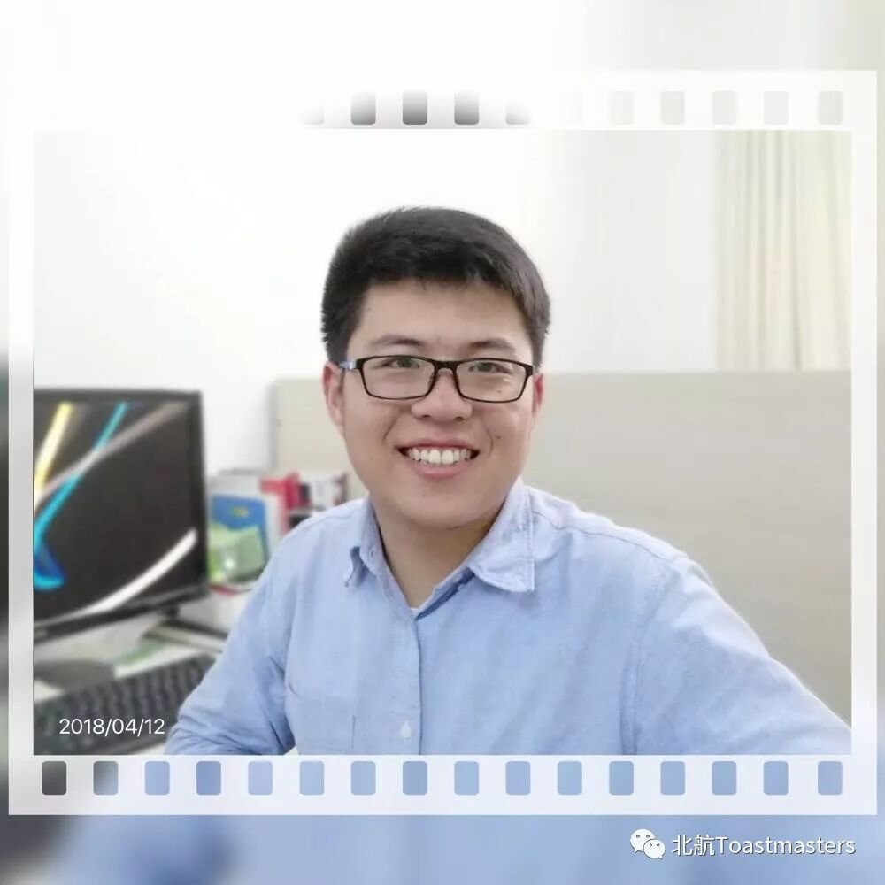

Time: 19:30-21:30, Friday, 13th April
Venue: Room B216, New Main Building, Beihang University
Table topic
Theme: Say something Nice
Table Topics Master: Claire

American people like to say "Thank you" when others help them or say something kind to them.People of many countries do so, too.It is a very good habit.
There are too many things in life happened unexpectedly, once we are facing those difficulties and unplanned scenario, we have to be positive and try to say something nice to appreciate people surrounding us, try to stand on others feet and adjust mind-set

Sincerely with this topic on Friday 13 April welcome to Beijing TMC You can share your options with us
Hightlight
Prepared speech
Speaker : Cyril
Theme: The long lost memory

Intro: Cyril wants to share with us his lost memory
Lets listen to his story about what happened in his life and how to get him to restart a new journey
Speaker : Samuel
Theme: React slowly

Intro: What is Samuel 'React slowly '
Lets listen to his own storiy about procrastinantion and the way to overcome it

BeihangToastmasters Club is a students' union. At the same time, we belong to a non-profit international organization calledToastmasters International.
Toastmasters International (TI) is a non-profit educational organization that operates clubs worldwide for the purpose of helping members improve their communication, public speaking, and leadership skills.You can find us by the following map of Beihang University.

https://mp.weixin.qq.com/s/VDd5YVj2wRId9GiRRNllpg
本页为抢救式本地归档，图文已永久保存。